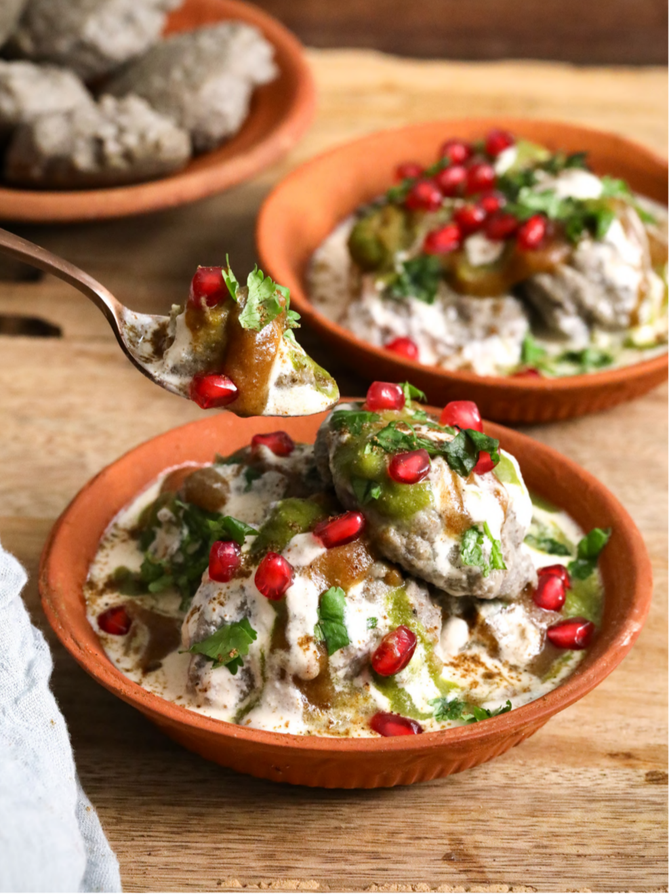

Homepage
Dahi Vada

DESCRIPTION
Dahi Vada is the healthy Indian recipe, this recipe is steamed instead of frying in refined oil and is made with natural ingredients
INGREDIENTS
Vada
- 1 cup soaked whole urad daal (with skin)
- 2 small green chilis, finely chopped
- 1 inch ginger, grated
- 1 teaspoon cumin seeds
- 1/2 teaspoon rock salt
Flavoured Dahi
- 3 cups peanut curd
- 3 tablespoons lemon juice
- 1/4 cup jaggery powder
- tablespoons roasted cumin powder
- teaspoon black salt
Assembly
- 1 & 1/2 cups date chutney
- 1 & 1/2 cups green chutney
- 1/4 cup pomegranate
- 1/2 cup chopped coriander
PREPARATION
- Soak 1 cup whole urad daal for about 6 hours.
- Blend the soaked urad daal until smooth. Then place it in a bowl, cover with a plate, and put it to ferment for 8-10 hours
- Prepare 3 cups peanut curd
- Prepare 1 & 1/2 cups date chutney
- Prepare 1 & 1/2 cups green chutney
METHOD
- Crush the green chili, ginger, cumin seeds, and salt in a mortar and pestle.
- Add the crushed spices to the fermented vada batter and mix well using a spoon.
- Grease the plates of an idli steamer with a little water. Place 2 tablespoons of the vada batter on each idli mold and steam fo 20 mins on low flame.
- For the flavoured dahi, place all its ingredients in a bowl and stir well. Refrigerate for 30 minutes.
- Check the vadas by inserting a fork. If the batter sticks to the fork, steam for a few more minutes.
- Remove the vadas while still warm. Soak them in warm water for 10 mins.
- Squeeze out the water from vadas and add them to the flavoured dahi bowl. Refrigerate for 30 mins.
- When ready to serve, place the vada in serving bowls and add all the assembly ingredients on top.